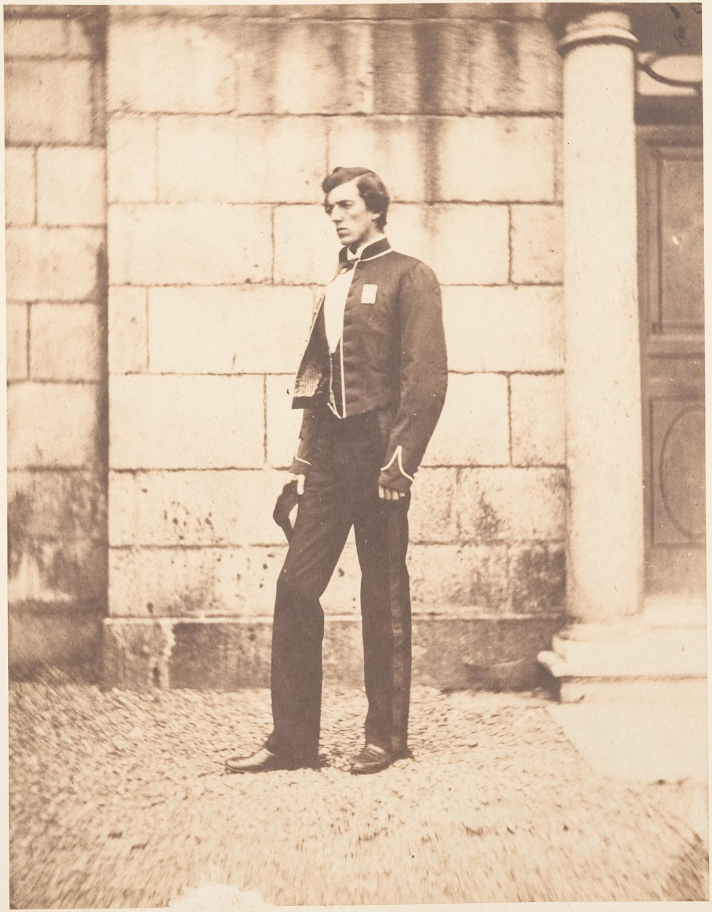

Sharper, cleaner, larger photos.
Clarivo upscales photos 2x, 4x or 8x, reduces blur and noise, sharpens portraits, colorizes black-and-white photos and restores faded prints. All of it runs on your iPhone or iPad.
Your photos are processed on your device and never uploaded.
Not on the App Store yet
There is no download link yet. See how it works, or ask a question on the support page.
Eight tools for sharper photos
- Upscale 2x 4x 8x
- Enlarge a small or cropped photo with an AI model that adds fine, natural-looking texture as it scales.
- Unblur
- Reduce motion blur and camera shake. Sharpen, with a strength slider, handles photos that are only a little soft.
- Remove noise
- Clean up the grain of low light and high ISO, blended with the original to the strength you choose.
- Portrait
- Find the faces in a photo and make them sharper, without inventing or changing them.
- Colorize
- Add natural-looking colour to a black-and-white photo while keeping the full resolution of the original.
- Restore
- Reduce scratches and dust, lift fading and remove the yellow cast of an old print.
- Auto fix
- Balance light and colour in one tap, with a strength slider.
- Batch
- Apply the same settings to many photos, with progress for each one and a cancel button.
Every result opens in a before and after view: drag the divider, pinch to zoom both sides at once, or touch and hold to see the original. Export as JPG, PNG or HEIC at the original size, 2x, 4x, 8x or a size you set, and keep or remove the photo's metadata and location. No watermark.
Try it before you pick your own
Clarivo comes with sample photos. Some are genuinely old or soft; others are copies of sharp photos that we deliberately degraded, so you can see what each tool does. They are labelled as such.

Small building photo600 px copy, for Upscale 
Shaken street signcopy with added shake, for Unblur Grainy catcopy with added noise, for Remove noise 
Street scene, 1864faded albumen print, for Restore 
Portrait, about 1859salted paper print, for Colorize
Photos from Pexels (Pexels License) and The Metropolitan Museum of Art (Open Access, CC0). See every tool with its sample.
Your photos stay on your device
Every model runs on your iPhone or iPad with Apple's Core ML. There is no account and no server that receives your pictures, and Clarivo runs no analytics of its own.
- You pick photos with the iOS photo picker or Files, so Clarivo sees only what you choose
- Saving to Photos uses add-only permission
- Works offline: the AI models are inside the app
- Remove location and other metadata when you export, if you want
- Recent results stay on your device and are cleared after 7 days
The only outside service is the ad network, and it never receives your photos. The privacy policy explains what it collects.
Free, and paid for by ads
Clarivo has no subscription and no in-app purchase. Ads from Google AdMob pay for it.
Where you see ads
- A banner on the Home screen, never over your photo.
- A short video before you save or share. You see the finished result first, a batch needs one ad, and saves in the next 2 minutes need none.
When no ad is available
- Saving goes ahead for free.
- This happens, for example, when you are offline.
Where the law requires it, the app shows Google's consent form, and iOS asks whether the app may track you. You can say no and still use everything.
Questions
Is Clarivo really free?
Yes. There is no subscription, no in-app purchase and no watermark. Ads from Google AdMob pay for the app: a banner on the Home screen, and a short rewarded video before you save or share a result. You always see the finished photo first.
Are my photos uploaded anywhere?
No. Your photos are processed on your device and never uploaded. The AI models are built into the app and run on your iPhone or iPad, so Clarivo also works offline. Your photos are never shared with the ad network.
Can it fix any blurry photo?
It can make most photos look sharper and cleaner. Unblur reduces motion blur and camera shake, and Sharpen helps photos that are only a little soft. Heavy blur can improve, but detail that the camera never captured cannot be brought back, and no app can do that honestly.
How large can a photo get?
Upscale offers 2x, 4x and 8x. The result can be up to 8192 pixels on its long side. If a photo is too big for 8x, Clarivo reduces it first and tells you.
Are the colours of a colorized photo accurate?
They are an estimate. The colorize model adds natural-looking colour, but it cannot know the real colour of a coat or a car in a photo from 1900. Treat it as an interpretation, not a historical record.
Does Portrait change faces?
No. It finds faces and sharpens them with the same upscaling model used for the rest of the photo, then blends them back. It does not generate a new face.
Why am I asked to watch an ad?
Ads pay for the app. Before you save or share, the app offers a short video. A whole batch needs one ad, and saves in the 2 minutes after an ad need no other. If no ad is available, for example offline, the save goes ahead for free.
Does it need access to my photo library?
Not to open photos. You pick photos with the iOS photo picker or from Files, and Clarivo sees only what you choose. To save a result to Photos, it asks for add-only permission, which cannot read your library.
Which devices does it run on?
iPhone and iPad with iOS 17 or iPadOS 17 or later.
When can I download it?
Clarivo is not on the App Store yet, so there is no download link. This page will link to the App Store once the app is available.